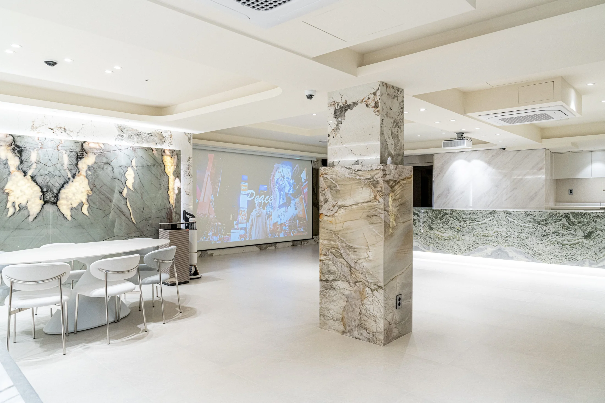
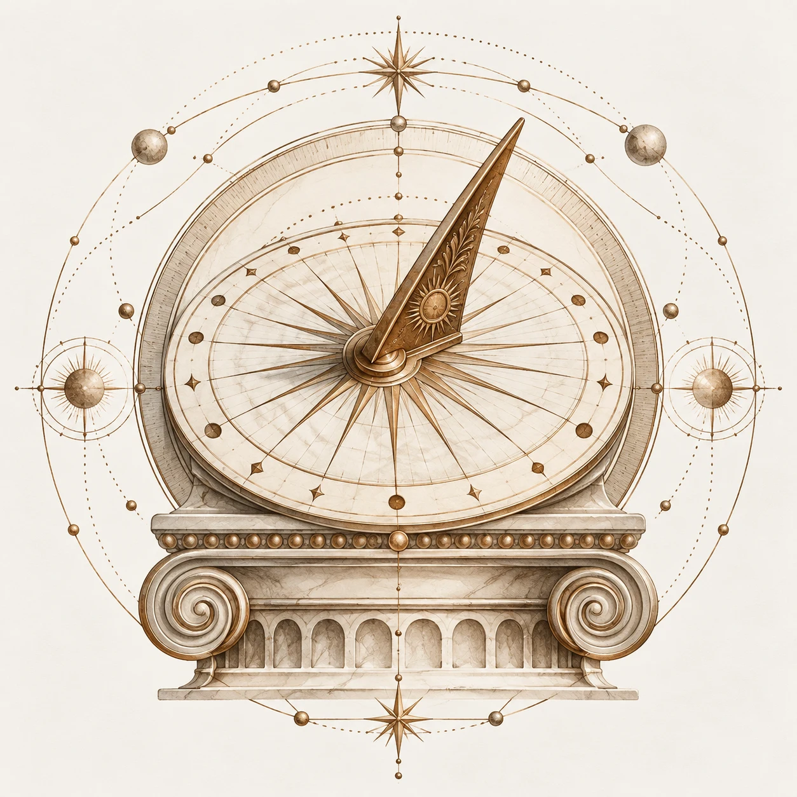
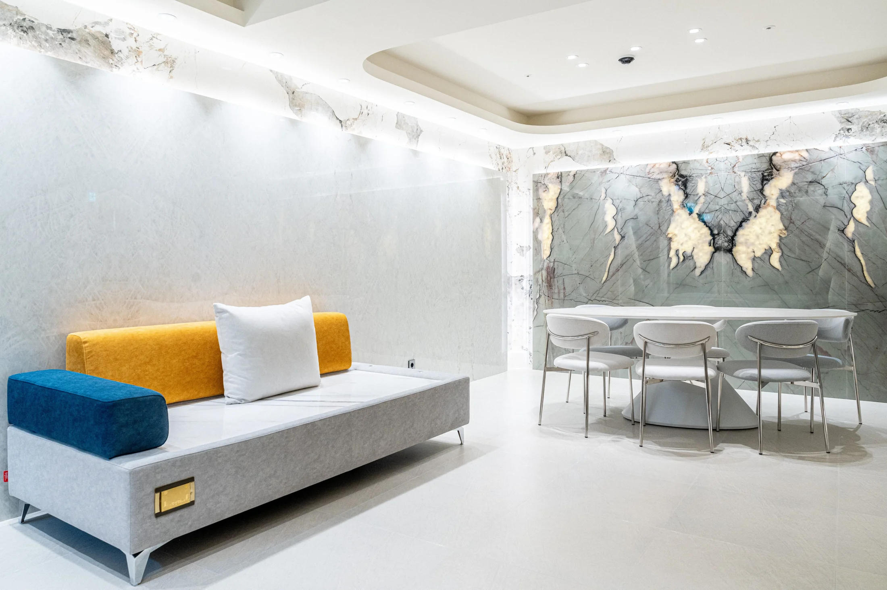
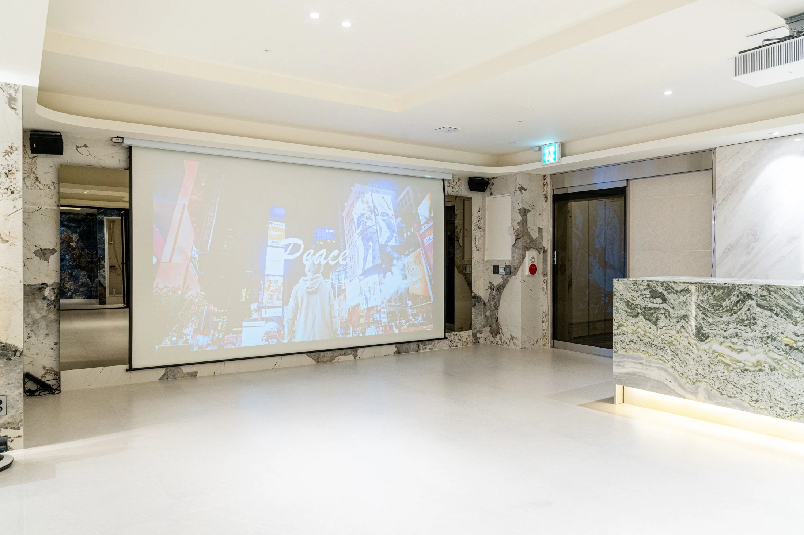
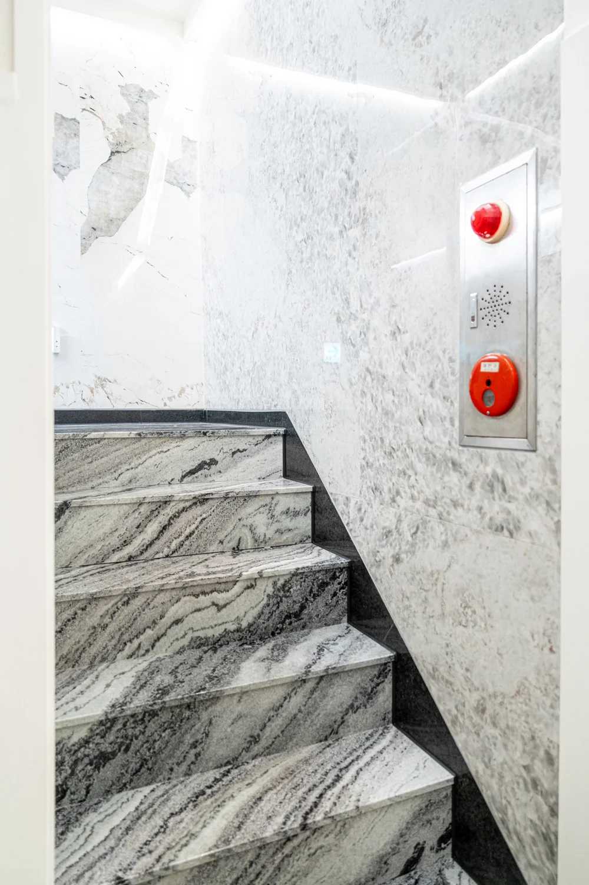

원하시는 시간
조율 가능합니다.
잠깐의 만남부터 밤새 이어지는 이야기까지.
모임에 맞는 이용 시간을 선택하세요.
네이버 예약 공개 요금 기준 · 2026.10.21 확인 자료
요일·날짜·인원에 따라 달라지며 최종 요금은 네이버 예약에서 확인해주세요.

시간제
최소 2시간 · 시간 사전 조율
데이 패키지
10:00 — 16:00
하프나잇
18:00 — 24:00
올나잇
19:00 — 다음날 09:00
24시간 대관
시작·종료 시각 예약 시 확인
추억 클라우드
이용 시간과 요금은 예약 전 문의해주세요.
추가 요금 안내
- 추가 인원
- 7인 초과 시 1인당 5,000원 추가
- 보증금
- 100,000원
- 청소비
- 100,000원 · 따로 청소 없이 바로 퇴실 원할 시
- 무제한 노래방
- 15,000원 · 리뷰 시 페이백
- 데코레이션
- 100,000원 · 원하시는 스타일과 주제에 맞춰 꾸며드립니다
함께한 순간이,
좋은 기억이 되도록.
네이버 전체 후기 보기↗좋은 만남은,
좋은 공간에서 시작됩니다.
브라질 대리석 원석의 결과 은은한 조명,
여유로운 라운지와 함께 즐길 거리까지.
모임의 모습에 맞춰 여러분의 이야기를 채워보세요.

with you.
그 장면 속, LINK.
방문부터 방송·뮤직비디오 촬영까지. LINK에서 만들어진 순간들을 만나보세요.
UnhoodBoy — Blessed Life
ft. Wyoalyx, Young Kl3in · 공식 뮤직비디오 촬영 장소
힙합 래퍼 UnhoodBoy · 쇼미더머니 출연 Young Kl3in 참여
YouTube에서 보기 ↗약 132㎡의 단독 대관 공간
안암역 3번 출구 도보 안내 기준
24시간 운영 · 사전 예약제
의자 50개 · 테이블 8개 안내
다양한 만남,
하나의 LINK
생일과 기념일, 동아리 모임과 워크숍.
여러분의 모임에 필요한 공간을 만나보세요.

01 / 03머물고 싶은 장면들.
실제 LINK 공간 사진입니다. 사진을 누르면 크게 볼 수 있습니다.
예약 전, 궁금한 것들.
몇 명까지 이용할 수 있나요?
네이버에는 최대 50명 이상, 의자 50개·테이블 8개로 안내되어 있습니다. 식사·발표 등 모임 방식에 따라 필요한 좌석 배치가 달라지므로 예상 인원과 행사 내용을 예약 전에 상담해주세요.
음식을 가져오거나 배달시켜도 되나요?
네이버 소개에는 배달·포장 음식 이용이 가능하다고 안내되어 있습니다. 주류 반입료·제한과 조리 및 정리 규정은 예약 전에 확인해주세요.
노래방과 빔프로젝터가 있나요?
TJ 노래방, LG 빔프로젝터와 대형 스크린이 안내되어 있습니다. 무제한 노래방은 15,000원이며 리뷰 시 페이백됩니다. 영상 재생 기기·연결 방식·개인 OTT 계정 필요 여부는 미리 확인해주세요.
예약과 취소는 어떻게 하나요?
네이버 예약에서 희망 날짜·시간·인원을 선택하고 이용 조건을 확인해주세요. 취소·환불 및 보증금 반환 규정은 선택한 예약 상품의 최신 안내를 따릅니다.

LINK,
당신만의 순간이 시작됩니다
서울특별시 성북구 고려대로26길 38, 지하 1층
6호선 안암역 3번 출구에서 도보 약 2분
고려대학교 도보 약 5분 · 네이버 안내 기준
24시간 운영 · 사전 예약제
지하 1층 계단 진입 · 주차와 접근성은 사전 문의